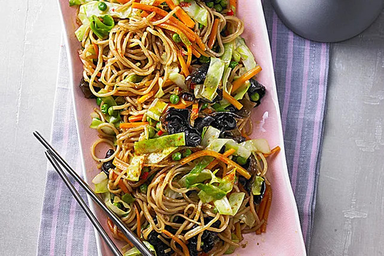

Asiatische Nudeln mit Gemüse

Veganes Gericht mit asiatischen Nudeln und Gemüse
Arbeitzeit ca. 20 Minuten. Kochzeit ca 20 Minuten
Zutaten
- 4 Karotten
- ¼ Spitzkohl
- 1 Lauchstange
- 140g Erbsen,TK
- 10 Mu-Err-Pilze
- 5 Spritzer Sojasauce
- 1 TL Zucker
- 1 Spritzer Zitronensaft
- 200g Spaghetti ohne Ei
- etwas Öl
- 1 Chilischote, klein geschnitten, oder Cayennepfeffer
etwas Ingwerpulver
etwas Paprikapulver
Salz und Pfeffer
- Currypulver
Zubereitung
- Die Mu-Err-Pilze in kaltem Wasser eine Stunde einweichen, anschließend 15 Minuten in wenig Wasser kochen lassen.
- Die Spaghetti nach Packungsanweisung bissfest kochen. Anschließend durch ein Sieb abtropfen lassen.
- Pilze, Karotten, Spitzkohl und Lauch klein schneiden.
- Pilze und Karotten in heißem Öl braten, anschließend Kohl, Lauch und Erbsen dazugeben und mitbraten.
Die abgetropften Spaghetti dazugeben und auch kurz mitbraten.
Alles mit klein geschnittener Chilischote oder Cayennepfeffer,
Sojasauce, Zucker, Zitronensaft, Ingwer, Paprika, Salz, Pfeffer und Curry abschmecken.